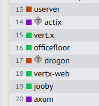

If you find info in this table inaccurate, please propose a PR with the fix.
The table below shows features of different high-level asynchronous frameworks. Note that the framework has to provide components well integrated into each other. For example, a framework with "Async PostgreSQL", "Dynamic Config" and "Metrics" has to have metrics for the PostgreSQL driver and dynamic configs to control the driver behavior at runtime. Such framework gets the ✔️ in the table below. If the components have weak integration with each other or require additional work for such integration (the usual case for third-party library), then the framework gets ± mark in the table below. For missing functionality or if we found no info on the functionality we use ❌ and ❓ respectively.
| Feature | 🐙 userver | go-micro 4.7.0 | dapr 1.5.3 | actix 0.13.0 + tokio 1.19.2 | drogon 1.7.5 | POCO 1.13.3 |
|---|---|---|---|---|---|---|
| Programming model for IO-bound apps | stackful coroutines | stackful coroutines | actors | stackless coroutines | callbacks / stackless coroutines | thread pool |
| Programming language to use | С++ | Go-lang | Python, JS, .Net, PHP, Java, Go | Rust | C++ | C++ |
| Caching data from remote or DB | ✔️ [↗] | ❌ | ❌ | ❌ | ❌ | ✔️ [↗] |
| Dynamic Config [1] | ✔️ [↗] | ✔️ [↗] | ❌ | ❌ | ❌ | ❌ |
| Unit testing | ✔️ C++ [↗] | ✔️ via Go-lang | ✔️ PHP [↗] | ✔️ | ✔️ [↗] | ❓ |
| Functional Testing [2] | ✔️ [↗] | ❌ | ❌ [↗] | ❌ [↗] | ❌ [↗] | ❓ |
| Async synchronization primitives | ✔️ [↗] | ✔️ via Go-lang | ❌ forces turn based access | ✔️ [↗] | ❌ | ✔️ [↗] |
| Dist locks | ✔️ | ✔️ [↗] | ❌ [↗] | ± third-party libs | ❌ | ❓ |
| Async HTTP client | ✔️ [↗] | ✔️ | ✔️ | ✔️ | ✔️ [↗] | ❓ |
| Async HTTP server | ✔️ [↗] | ✔️ | ✔️ | ✔️ | ✔️ | ✔️ [↗] |
| Async gRPC client | ✔️ [↗] | ✔️ | ✔️ | ± third-party libs | ❌ | ❌ |
| Async gRPC server | ✔️ [↗] | ✔️ | ✔️ | ± third-party libs | ❌ | ❌ |
| Async PostgreSQL | ✔️ [↗] | ± third-party driver | ✔️ [↗] | ❌ manual offloading | ✔️ [↗] | ✔️ [↗] |
| PostgreSQL pipelining, binary protocol | ✔️ [↗] | ❌ | ❌ | ± third-party libs | ❌ | ❓ |
| Async Redis | ✔️ [↗] | ± third-party driver | ✔️ [↗] | ± third-party libs | ✔️ [↗] | ❓ |
| Async Mongo | ✔️ [↗] | ± third-party driver | ✔️ [↗] | ❌ manual offloading | ❌ [↗] | ❓ |
| Async ClickHouse | ✔️ [↗] | ± third-party driver | ❌ | ± third-party libs | ❌ [↗] | ❓ |
| Async MySQL | ✔️ mysql_driver | ± third-party driver | ✔️ [↗] | ❌ [↗] | ✔️ [↗] | ✔️ [↗] |
| Async ODBC | ❌ | ❓ | ❓ | ❓ | ❓ | ✔️ [↗] |
| Metrics | ✔️ [↗] | ± third-party driver | ✔️ [↗] | ❌ | ❌ | ❓ |
| No args evaluation for disabled logs | ✔️ [↗] | ❌ | ❌ | ± third-party libs | ❌ | ❌ |
| Secrets Management | ± [↗] | ❓ | ✔️ | ❓ | ❓ | ❓ |
| Distributed Tracing | ✔️ [↗] | ❓ | ✔️ [↗] | ± third-party libs | ❌ | ❓ |
| JSON, BSON, YAML | ✔️ [↗] | ± third-party libs | ± third-party libs | ± third-party libs | ± only JSON | ❓ |
| XML | ❌ | ❓ | ❓ | ❓ | ❓ | ✔️ [↗] |
| Content compression/decompression | ✔️ | ✔️ | ❓ | ✔️ | ✔️ | ✔️ [↗] |
| Service Discovery | ✔️ DNS, DB topology discovery | ✔️ [↗] | ❓ | ❓ | ❓ | ± [↗] (DNS) |
| Async TCP/UDP | ✔️ [↗] | ✔️ | ❓ | ✔️ [↗] | ❌ | ✔️ [↗] |
| Async TLS Socket | ✔️ [↗] | ✔️ | ❓ | ± third-party libs | ❌ | ✔️ [↗] |
| Async HTTPS client | ✔️ [↗] | ✔️ | ❓ | ✔️ | ❓ | ✔️ [↗] |
| Async HTTPS server | ✔️ [↗] | ❓ | ❓ | ✔️ | ❓ | ✔️ [↗] |
| WebSockets Server | ✔️ [↗] | ± third-party libs | ❌ [↗] | ± third-party libs | ✔️ [↗] | ❌ |
| Deadlines and Cancellations | ✔️ | ❓ | ❓ | ❓ | ± [↗] | ❌ |
| Retries and Load Balancing | ✔️ | ✔️ [↗] | ✔️ | ❓ | ❓ | ❌ |
The table above shows the well-developed functionality of userver. Additionally userver is highly effective which is proven by the results of the Techempower benchmark run. Userver comes ahead of its competitors from the table. [3], see [↗]

[1]: "Dynamic Configs" stands for any out-of-the-box functionality that allows to change behavior of the service without downtime and restart.
[2]: Functional Testing includes DB startup and initialization; mocks for other microservices; testpoints functionality.
[3]: Techempower run № 3c2e9871-9c2a-4ff3-bc31-620f65da4e74.